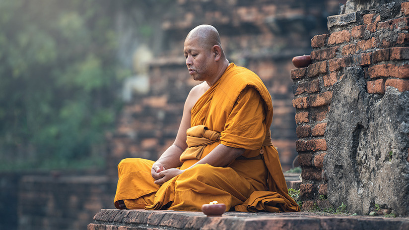
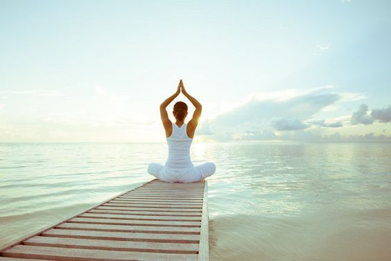
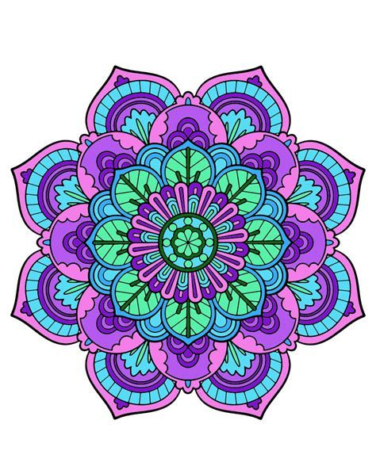
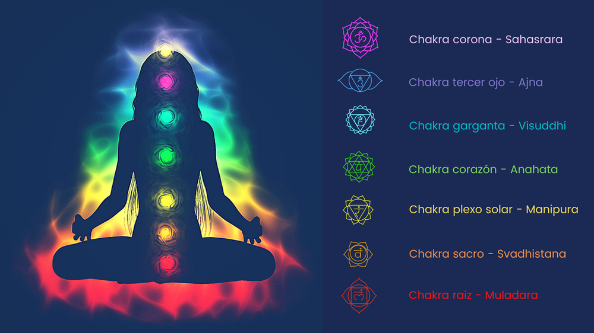

Meditación
La meditación se ha practicado por miles de años. Originalmente el propósito de la meditación era de ayudar a profundizar la comprensión de lo sagrado y las fuerzas místicas en la vida. En la actualidad, la meditación comúnmente se usa para relajamiento y reducción del estrés, esta puede darte una sensación de calma, paz y equilibrio que puede beneficiar tanto tu bienestar emocional como tu salud general. También puedes usarla para relajarte y lidiar con el estrés al enfocar tu atención en algo que te calme. La meditación puede ayudarte a aprender a mantenerte centrado y a conservar la paz interior. Estos beneficios no finalizan cuando termina la sesión de meditación. La meditación puede ayudarte a llevar adelante el día de manera más calmada y a controlar los síntomas de ciertas afecciones médicas. La meditación también se utiliza en el budismo o el hinduismo como Sadhana, con el objetivo final de llegar a un estado de iluminación espiritual denominado Samadhi, que en estas religiones orientales, sería uno de los caminos que llevaría al objetivo final del Nirvana, por esta razón, los monjes budistas se aislaban en las montañas para meditar durante días o incluso semanas en ayunas para alcanzar la iluminación espiritual.
Yoga
El yoga es una práctica que conecta el cuerpo, la respiración y la mente. Esta práctica utiliza posturas físicas, ejercicios de respiración y meditación para mejorar la salud general. El yoga se desarrolló como una práctica espiritual hace miles de años. Hoy en día la mayoría de las personas en occidente hace yoga como ejercicio y para reducir el estrés. Es una disciplina tradicional espiritual, física y mental originada en la India. El yoga es una de las seis dárshanas (doctrinas) ortodoxas del hinduismo. Enfatiza la meditación y la liberación, siendo su texto principal el Yoga sutra (400 d.C.). Esta palabra se asocia con prácticas de meditación en el hinduismo, el budismo y el jainismo. En sentido amplio se llama yoga a cualquier camino espiritual (marga) hindú, cuya meta siempre es lograr la la liberación (moksha), es decir, un estado irreversible de sabiduría, paz y libertad interior. Los yogas o margas más conocidos son el del conocimiento, el de la devoción, el de la acción y el del control de la mente.
Armado de Mandalas
Los mandalas son representaciones simbólicas espirituales y rituales del macrocosmos y el microcosmos, utilizadas en el budismo y el hinduismo. Mandala es una palabra de origen sánscrito y significa "círculo"; representa la unidad, la armonía y la infinitud del universo mediante el equilibrio de los elementos visuales. En las culturas orientales, de donde se tienen los primeros registros de diseño y uso de los mandalas, estos tienen como objetivo el cese del pensamiento y de la mente, aspirando alcanzar un estado meditativo. Los hindúes fueron los primeros en usar mandalas como un instrumento espiritual, aunque se han popularizado en occidente por los diseños y usos atribuidos al budismo. Sin embargo, los mandalas no han sido exclusivos del oriente o de una religión en particular, ya que se han encontrado representaciones geométricas similares en otras culturas y con diferentes usos que van más allá de lo espiritual. En nuestro retiro espiritual aprenderas a armar mandalas y colorearlos como más te gusten, como una forma de meditación, además de aprender mas sobre su historia, significado y valor espiritual.
¿Sabías que...
Tanto la meditación, el yoga y los mandalas eran utilizados por los hindues y budistas para abrir su chakras? El chakra significa, en sánscrito, círculo. Según su ubicación representa la energia en diferentes partes del cuerpo. Estos vórtices o chakras son siete y representan la unión entre la conciencia o la mente y la materia o el cuerpo. De esta manera nuestro ser físico, emocional, espiritual y social se unen. Los chakras se distribuyen por toda la columna vertebral, desde el coxis hasta la coronilla y, cuando somos conscientes de su existencia, podemos trabajar de manera conjunta aspectos del cuerpo físico y del plano de la conciencia. Hay siete tipos de Chakra y tienen diferentes funciones:
- Muladhara Chakra: De color rojo, es el chakra raiz, y está conectado a los aspectos físicos del ser humano y también rige los aspectos de nuestra supervivencia
- Swadishtana Chakra: De color naranja, es el chakra del hueso sacro y rige nuestras emociones, creatividad y placer y sexualidad.
- Manipura Chakra: De color amarillo, es el chakra del plexo solar y acoge el poder y ambición personal.
- Anahata Chakra: De color verde, es el centro del corazón y está asociado al amor y la sanación.
- Vishudha Chakra: De color azul turquesa, es el chakra de la garganta y es el responsable de la comunicación.
- Ajna Chakra: De color azul índigo, es el tercer ojo y es el centro de la intuición.
- Sahasrara Chakra: De color blanco o morado, es el chakra corona y es el centro de conexión espiritual.
Caminatas
Las caminatas alrededor de la costa seran una actividad común y descontracturante, se realizarán dos caminatas diarias, una a la mañana después de desayunar y otra a la tarde después de almorzar, estas son opcionales y si bien no tienen relación con los ejercicios que realizaremos regularmente a lo largo de su estadía recomendamos realizar por lo menos una al día. Durante las caminatas también se realizaran charlas informando y enseñando sobre las diferentes religiones de oriente y sus dioses y profetas, aunque no es obligatorio participar de estas.
Armado de Amuletos y Talismanes
Los amuletos y talismanes son objetos, por lo general pequeños, a los que se les otorga una carga mágica y ellos por su parte le ofreceran a quien los lleve proteccion y buena suerte, por lo general vienen en forma de pequeños accesorios, tales como pulseras, collares, anillos o tobilleras con pequeños dijes o piedras como ametistas o cuarzos, que son la fuente de su poder. En nuestra estancia podrás aprender a armar tu propio amuleto, elegir la prenda en la que quieras tu amuleto, personalizarlo como quieras y llevartelo una vez terminada tu estadia!
Días libres
Cada tres días habrá un día libre en el que no se realizará ninguna actividad, enfocado unicamente en su goze, si bien no es necesario, igualmente se pueden realizar cualquiera de las actividades anteriores si así lo desean, se pueden adelantar los armados de amuletos y mandalas, o aprender mas sobre el yoga y la meditación, o incluso se puede recorrer la localidad de Chapadmalal, donde nos estaremos hospedando, también ofrecemos un viaje a Mar del Plata a pasar el día, este se abona por separado y se recorrera brevemente la ciudad de Mar del Plata y se pasara el resto del día en la playa, se volverá a la noche y solo se harán durante los días libres.